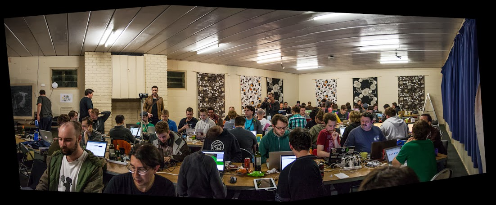
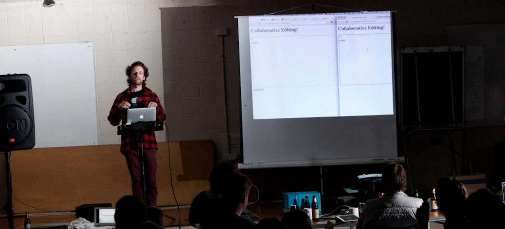

Speakers and Mentors


Michael Schloh von Bennewitz


…more to be announced!
CampJS Sponsors


About CampJS
CampJS creates a unique blend of expert-led, structured content and self-directed, unstructured learning.
CampJS III will commence at 3pm Friday on the 23rd of May, and run through to 9am Monday the 26th. The Camp will be held at Lord Somers Camp, Victoria, Australia. Expect a CampJS IV later in 2014.
A bus from the airport will be provided for interstate travellers.Fly into Tullamarine airport around midday, busses will leave between 1 and 2pm. The return bus will get people back to the airport before midday.
The venue does provide comfortable accommodation, but you can camp there if that is your wish.

CampJS Sessions
More to be announced...
Thinking in Components – Workshop
Over the past couple of years, front-end development has begun to grow up and become a serious discipline thanks to browsers and tooling but we haven’t yet had a good way to share tiny pieces of front-end code. Component is that solution.
Component gives us a package manager that tackles not only versioning, but the entire front-end workflow. It has similar goals to Web Components and allows you to create packages of HTML, CSS and Javascript and re-use them across all your different projects.
Using Component we will show you how you can structure an application and create and share your own packages. Most importantly, we will show you how to think in “components” instead of large libraries so you can make your HTML, CSS and JS more modular than ever before.
Ian Storm Taylor
Ian is a designer and developer at Segment.io who’s super into open-source. He loves component with a passion, and thinks anyone and everyone who does front-end work should be using it.
Anthony Short
Anthony is an Australian designer and front-end engineer at Segment.io in San Francisco. He is a contributor to Component and many other open-source projects and thinks every library should be a Component.
ES6 – Workshop
Learn how to use the next generation of JavaScript. More details to be announced!
Dominic Denicola
Domenic Denicola is highly active in the JavaScript community, building web applications for a living while maintaining many open-source libraries and contributing to the web and JavaScript standards process on the side. He's passionate about things like software craftsmanship, the next version of JavaScript, and making the standards process more transparent to developers, and is known as one of the co-authors of the Promises/A+ open specification and the editor of the ES6 promises spec.
Recently he was elected to the W3C Technical Architecture Group,
and has been working on bringing streams from Node.js into the
browser.
Domenic works at Lab49
in New York City.
ES6 Generators – Workshop
Asynchronous flow control in JavaScript was broken. It didn't matter if you used pure JS or a flow control library like promises or Node.js streams, you were reimplementing what the language already had and lost interoperability. Instead of handling errors with try/catch blocks and iterating with loops, you were forced to use something custom that didn't work well with another custom thing. With generators however, you can now use those trustworthy native language constructs again and still do non-blocking IO!
We’re already relying heavily on generators at segment.io and they made our code a lot more solid and maintainable. Let’s look at how they work and how they can be used in real life situations.
Julian Gruber
Julian Gruber is a Software Engineer from Southern Germany who splits his time between his day job at Segment.io, his many independent open source projects, and his metal band Running Death. His most recent areas of interest are JS generators, LevelDB and browser operating systems.
Nodeos – Adding a new level to the "full stack developer" – Workshop
Nodeos is a lightweight Linux distribution built around node and npm. There is no bash, no systemd, and no apt/yum. Your system tools are written in node, and installed with npm.
Every npm package is a nodeos package, so anyone can contribute. The base nodeos install gets you started, but beyond getting a few necessary services running nodeos expresses no opinions on how to run your system.
Nodeos wants to make systems programming as accessible as node has made web programming.
Jabob Groundwater
Jacob lives in the Bay Area, but is originally from Vancouver Canada. He is an applied mathematician turned sysadmin turned software engineer, and currently works on node tracing at new relic.
A CAD→CAM solution for the Browser – Talk
I'll be talking about the pain points experienced with using existing CAD and CAM systems, which include:
- Price
- Cross-platform compatibility
- Usability issues
Basically, you either pay a ton of money and get "cutting edge" software and limit yourself to windows, or you can risk going with an open solution that will likely not suit your needs. It's important that the solution you choose is hackable and in a language that many people understand.
After laying a bit more groundwork, we'll shift into more of a "how do we do this in javascript" and I'll show where I am thus far.
The kicker to this talk is walking through the various steps of:
- Creating a 3d object
- Preparing the 3d object for milling
- Milling the object using a cnc that I'll be bringing
I will go into the details of building your own cnc machine at home and how that varies from a $50,000 machine that you can get off of ebay or similar.
Elijah Insua
As a long time tinkerer/maker I have recently rediscovered working with my hands. Not only is it super fulfilling, but the end result is a real physical thing that you can hold. My passion for building robots and the web drives my dreams of building an automated infrastructure, that allows me to quickly iterate on various ideas while building physical objects. All built inside of the browser of course!
NodeBots – Workshop
NodeBots are Arduino-based robots that are controlled by node.js. This workshop will step you through assembling a number of basic circuits and programming using an Arduino-compatible microcontroller and node.js, to help you get started building your own NodeBots.
Resources
To make the most of the time at the workshop, set up your NodeBots environment in advance: https://github.com/ajfisher/nbdau/blob/master/setup.md
Interfacing with mobile IOT Nodes – Building networks of embedded IOT devices using Node.js – Talk
Michael Schloh von Bennewitz
Use cases of collaborating mobile (phone) and embedded (baseboard) devices participating on a Internet of things benefit from special consideration of device features. In this quirky presentation we'll examine two such devices, a Tizen handset and a Galileo SBC baseboard running Yocto Linux, and form concrete designs of their IoT exchanges using JavaScript, Node.js, MQTT, and Skynet technologies.
To illustrate the unique task of designing collaboration of sensor and feature rich telemetry devices otherwise failing to converge in the IoT landscape, we'll follow a Intel XDK workflow hands-on, and provide boilerplate code and live demonstrations.
Michael Schloh von Bennewitz
Michael Schloh von Bennewitz is a computer scientist specializing in network software, mobile computing, and client server design. Responsible for research, development, and maintenance of packages in several community software repositories, Michael actively contributes to the Opensource development community. Fluent in four languages, he speaks at technical events every year. Michael has presented for groups including Cable & Wireless, Nokia, Ubuntu, and Mobile World Congress.
Dropping Anchor – Using node.js and Docker to Build Highly-Available Systems – Talk
From the complex concepts like distributed task scheduling to the simple like hosting disk images, using Docker outside of an experimental context can be surprisingly difficult. Strap in for an exciting ride while Conrad covers the ins and outs of how he uses node.js and Docker in his internal hosting platform.
Conrad Pankoff
Skipping between multiple levels of the stack, Conrad has worked on projects ranging from embedded device programming to web applications to multi-machine clustered systems. Through touching so many different areas, Conrad has learnt first-hand the value of keeping systems flexible yet manageable.
WebRTC & Web Components; match made in heaven – Workshop
Damon and Ben are both some of the most active node.js module publishers in Australia. Damon's spent the past 6 months working on RTC.io a library of javascript components to make WebRTC easy to implement. Benjamin's spent the last 6 months working on InterConnect, an open-source mashup of (IRC, Swiggle, Skype, Google Hangouts and GitHub Profiles), which is built using Web Components and RTC.io.
Together, RTC.io and InterConnect's web components will make building skype as easy as building a web form. We will introduce everyone into the technologies of WebRTC and Web Components, the technical details of them, the problems they're trying to solve, and the technical challenges and complexities which RTC.io and InterConnect's components hide away. The workshop will get people hands on with the tech, building their own skypes, adding their own features, etc, and actually working with the tech, actually building something that video calls to each other!
BEM for JS – Talk
Introducing BEM Block Libraries - a set of blocks build on top of same ideas that inspired Web Components creators but long long time ago. Being developed in 2008 by Yandex, Russian Search Engine, they are very helpful in building websites fast and flexible. Why so? Because of the years of experience put in them while working in large rapidly changing services.
Unfortunately it is very well known only here in Russia and ex-Soviet countries, where, thanks to Harry Roberts and Nicolas Gallagher, so-called BEM CSS is spread far ahead in the rest of the world. With this talk we aim to share what we have in BEM Methodology to cover JS coding with and introduce Australian developers to a new chapter in BEM, partly not always easy to understand, open-sourced and handy for maintaining complexity of web development you could grow in.
Vladimir Grinenko
Vladimir Grinenko is a web developer with more than 10 years of fronted experience and a deep expertise in HTML5, CSS3 and JavaScript. He works for Yandex, Russian Search engine, and leads a team that develops BEM technologies. He also evangelizes a lot both in Russian and English and gives live coding sessions as well as maintains and contributs to few opensource projects. His area of speaking experience includes such topics as BEM technologies, large scale web sites architecture, modular frontend applications development, etc.
Intro to WebGL with three.js – Workshop

An introduction to developing WebGL applications using the three.js framework. We will look at the basics of three.js to get you up an running covering the coordinate system, cameras & lighting and meshes and materials.
For more advanced users I will create some exercises for working with the physics library physijs.
Alex Mackey
Alex works as a Software Development Lead for Kiandra IT. He runs the non-profit conference DDDMelbourne.com & wrote the books Introducing .NET 4.0 & Introducing .NET 4.5 for Apress. When he’s not in front of a computer he enjoys CrossFit, cat videos & kicking people at Taekwondo.
Front-end Builds with Gulp – Workshop
After looking at the current state of JS build tools, we'll run through the creation of a standard Gulpfile.
Offline-First from First Principals – Workshop
I think it'd be interesting to show how something like Hoodie works, and how you could do something similar in Angular. We could do a 'OMG look at Hoodie' workshop but I think something more low-level would be better. Schwarz, thoughts?
Glen Maddern
Glen Maddern is an independent web developer from Melbourne, Australia, with a background in mathematical simulations and distributed computing. Since 2009, he's been working exclusively on the web and most recently, almost entirely on the front-end. He believes there's never been a more potent target for ideas than the browser and the web, and loves the incredible pace at which new ideas are emerging. He runs the Melbourne AngularJS meetup and is an organiser of the inaugural CSSConfAU.
Ben Schwarz
Ben Schwarz is an independent web dude from Melbourne. He's an invited expert to the W3C CSS working group, 1/5 of CSSConf, a percentage of JSConf (We all know how good JavaScript is at numbers), a bower team member and a swag of other stupid projects.
Learnyounode – Workshop

A nodeschool.io workshop that will teach you Node.js, starting at a basic "HELLO WORLD" and moving on to more advanced exercises: synchronous & asynchronous I/O, filesystem operations, TCP & HTTP networking, events, streams and more.
Stream Adventure – Workshop
A nodeschool.io workshop that teaches you how to compose streaming interfaces with .pipe()!
Bytewiser – Workshop
A nodeschool.io workshop that teaches you the fundamentals of working with binary data in node.js and HTML5 browsers.
Functional JavaScript – Workshop
A nodeschool.io workshop that teaching fundamental functional programming features of Javascript. No libraries required (i.e. no underscore), just ES5.
Many functional programming learning resources will teach you to write functional code, but it's often highly indirect, deeply abstracted, requires understanding complex relationships between custom library calls, and doesn't represent the reality of how people actually write JavaScript.
The goal of this workshop is to create realistic problems that can be solved using terse, vanilla, idiomatic JavaScript.
Hack Space

The best way to learn is by doing, thus the hall is mostly reserved for uninterrupted hacking. Get inspired by the talks & workshops or the awesome collective talent in the room. Build anything you want.

On the final evening, everyone is given the opportunity to show off what they built or learned at CampJS, with prizes for the best presentations!

hacking on voxel sheep w/ @codemiller and @substack at @campjsnews pic.twitter.com/tVamTEaV
— voxel.js (@voxeljs) February 17, 2013Tickets
Regular tickets are priced at $450 per-person. This grants you:
- 3 nights of comfortable accommodation (tents optional).
- 3 meals per day.
- Morning & afternoon tea.
- Unlimited "refrigerated beverages".
- Free access to talks and workshops.
- Opportunity to win prizes.
- A fun weekend hanging out with the best developers in Australia and from around the world.
Tickets will be released to the public in limited batches starting 11am EST, Friday January 24th 2014. See ticketing for the latest pricing.
Corporate/Group Discounts
Want to send 3 or more developers to CampJS? Consider sponsoring CampJS (help make CampJS better!) or See ticketing for deals.
Sponsors
CampJS is looking for sponsors large and small. We are particularly interested in sponsors willing to attend the Camp and get involved with our community for any kind of creative, educational & community-building activities.
Code of Conduct
CampJS strives to be a safe and welcoming environment for everyone. We will not tolerate harassment or discriminatory behaviour at CampJS and will be enforcing the policy outlined in our code of conduct.